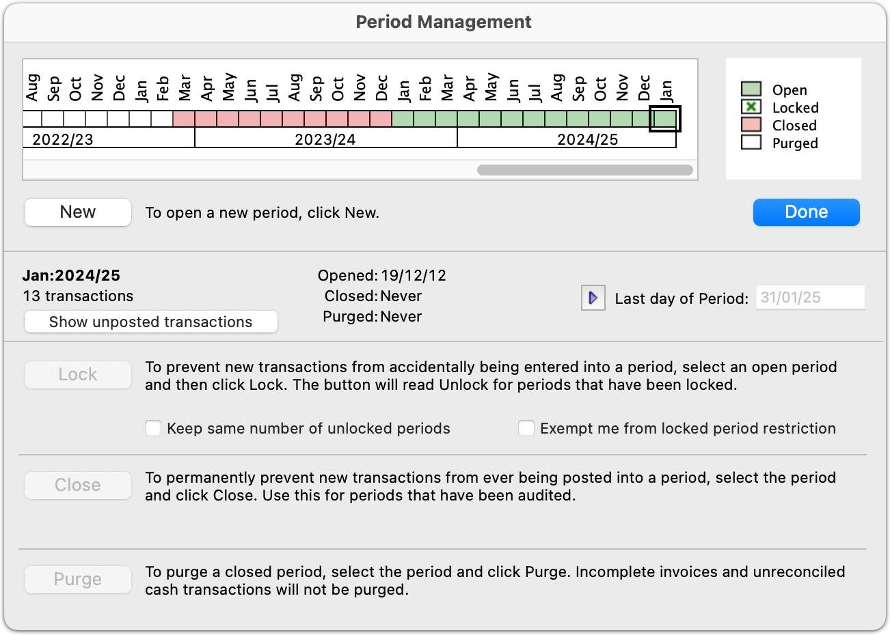
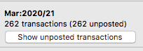

MoneyWorks Manual
The Period Management Dialog Box
The Period Management dialog box allows you to open, close, lock, unlock and purge periods. To display the period management dialog box:
- Choose Command>Open/Close Period
The Period Management dialog box will open. This dialog box displays the current status of the periods at any one time.

The status of individual periods is represented by a row of cute little colour-coded boxes, labelled above with the name of the period and below by the name of the financial year. The legend at the right indicates the status of each period. The right-most period is the current period.
The Open periods are displayed in green, and will be on the right hand side of the period bar. These are the periods into which you can enter and post transactions. You must have at least one period open.
Any locked periods will have a green cross through them, and will be to the immediate left of the open periods. These are periods that have been temporarily made unavailable, which is to say, transactions cannot be posted into them until they are unlocked. You will do this to prevent accidental posting of transactions into previous periods.
Closed periods appear in red. You cannot enter transactions into these, nor can they be reopened. However any transactions that you had entered are still in the system and can be viewed, printed and analysed.
Purged periods appear in white. These are closed periods that have had all the transaction information removed from them. The general ledger balances for these periods are still available.
Tip: If you need to determine the internal number of a period, hold down the shift key and these will be displayed instead of the period names.
To View the Status of a Period:
- Click on a particular period in the bar at the top of the Period Management dialog box
The status information will be displayed

From this you can determine the period end date, the number of transactions, and when the period was opened, closed and purged.
Opening a New Period
Before you can enter transactions into a new financial period, it must be opened. MoneyWorks will offer to open a new period when you open the document for the first time after the end date of the previous period, or when you date a transaction in the new period.
You can explicitly open a period at any time as follows:
- Click the New button
A confirmation dialog box is displayed.

MoneyWorks needs to know the last day of the new period.
If the new period is the first in a new financial year, a different message is displayed —see a New Financial Year.
- Check the date of the last day in the period
If your year operates on calendar months, this will be correct. If you do alter this date, you will be asked for further confirmation.
- Click OK to open the new period
The new period will appear in the Period Management dialog box. The period name will also appear in the Period pop-up menu for transaction entry, allowing you to enter transactions for the period.
The new period becomes the current period.
Last day in period: The period-end date is critical. Whenever you enter the date of a transaction, MoneyWorks scans these period dates to determine into which period to place the transaction. To change the date for the last day of a period:

- Click the Period-End Enable button
The Last day in Period field enables, allowing you to enter the new period-end date.
Note: You should never need to do this. If in doubt, leave it alone!
Locking Periods:
You can lock periods so that you do not enter transactions into it by mistake. This is particularly useful when you are awaiting the final accounts from the accountant at year end.
- Click on the period you wish to lock and click the Lock button
The nominated period (which must be open and cannot be the current period), and all prior open periods, will be locked.
Automatically Locking Periods: You can specify that periods will be automatically locked. Thus, whenever you open a new period, the previous oldest unlocked period will be locked.
- Set the Keep same number of unlocked periods check box
Thus if there are currently two unlocked periods when you open a new period, the earlier of these will be automatically locked and you will still have two unlocked periods.
Posting adjustments into locked periods
You can unlock periods at any time, but this will require that you are the only logged in user. When periods are unlocked, any other user will also be able to post into the unoocked periods.
1. Click on the locked period you wish to unlock and click the Unlock button
The nominated period, and all subsequent locked periods, will be locked.
In MoneyWorks Datacentre 9.1.6 and later, you can temporarily exempt yourself from period locking in order to post adjustments into locked periods without unlocking them for everybody.
- Click the Exempt me from locked period restriction checkbox
Locked periods will remain locked for other logged-in users, but while you remain logged in, you will be able to enter and post transactions into periods that are locked. The checkbox will reset when you log out, or you can turn it off once you have backposted any necessary adjustments.
Closing a Period:
You should close a period when you are sure that there are no more transactions for the period. Until a period is closed, the financial results for the period cannot be considered as final as they can still be changed.
Closing a period is permanent (it cannot be re-opened). For this reason a good strategy is to Lock periods once they are operationally complete, and only close periods in the previous financial year once they have been finalised by your accountant for any end of year adjustments.
Closing a period does not affect any transactions in that period (but you cannot close a period if it, or any preceding periods, have unposted transactions).
- Click the desired period to select it and click the Close button
You will be asked for confirmation.

If there are unposted transactions for the period, or any prior period, the Close button will be dimmed—you cannot close a period if it (or a prior period) contains an unposted transaction. Click the Show unposted transactions button to review the unposted transactions in or before the highlighted period.
Note: When you close a period, any prior open periods will also be closed.
Note: Once the period is closed it cannot be reopened, and you cannot enter transactions into it. If you are unsure, consider locking the period instead.
- Click Close to close the period(s)
The period(s) will be closed.
Purging a Period:
Purging removes all the transaction records for the period and any previous period. The account balances remain in the MoneyWorks document until the period is 91 periods old. A period must be closed before it can be purged.
- Click the desired period to select it and click the Purge button
A confirmation dialog box will be displayed. This may take a few moments as MoneyWorks will check to see if there are any transactions in the period that should not be purged. Note that the period must already be closed (otherwise the Purge button will be dimmed).
Click Cancel in the confirmation dialog if you have developed cold feet.
Purging does not affect the following transactions (they will be purged once they are completed when you purge subsequent periods or if you repurge the period):
- Incomplete invoices (i.e. ones which are not fully paid).
- Transactions that have not been processed for GST/VAT.
- Unreconciled cash transactions against a bank which has been nominated as must be reconciled —see Bank Account Must be Reconciled.
Note: The transaction records for the period are deleted permanently from the document. For this reason, before purging a period, you may want to back up your MoneyWorks document, print a transaction list, or export the transactions into a text archive with the Export command.
Note: Purging the transactions permanently removes them from the file. The space that they took up will be reused when new transactions are entered. The file itself will not reduce in size. To reduce the file size, you should compact the file —see Compacting.
What if I never purge? If you don’t purge transactions, they will stick around forever. This may or may not be a good thing—it’s your call!